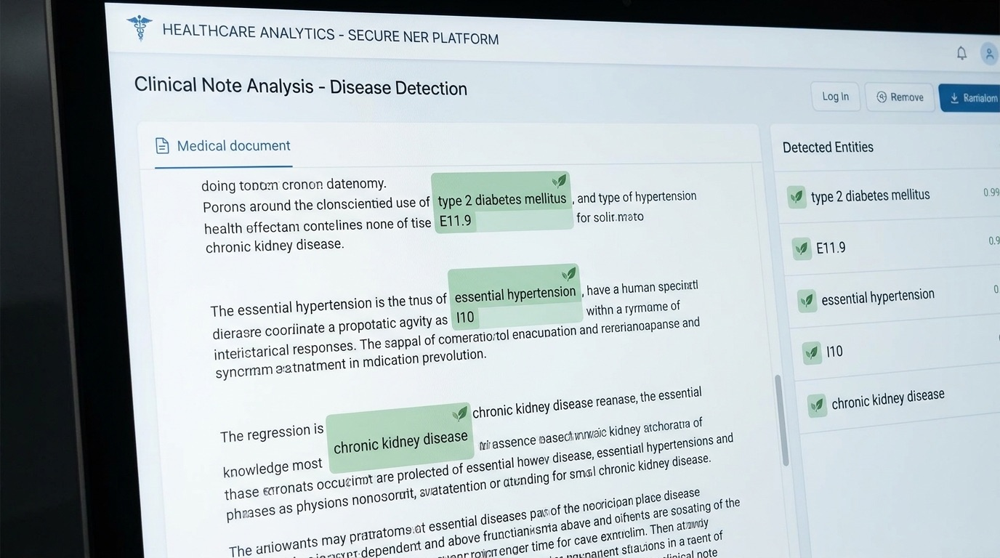
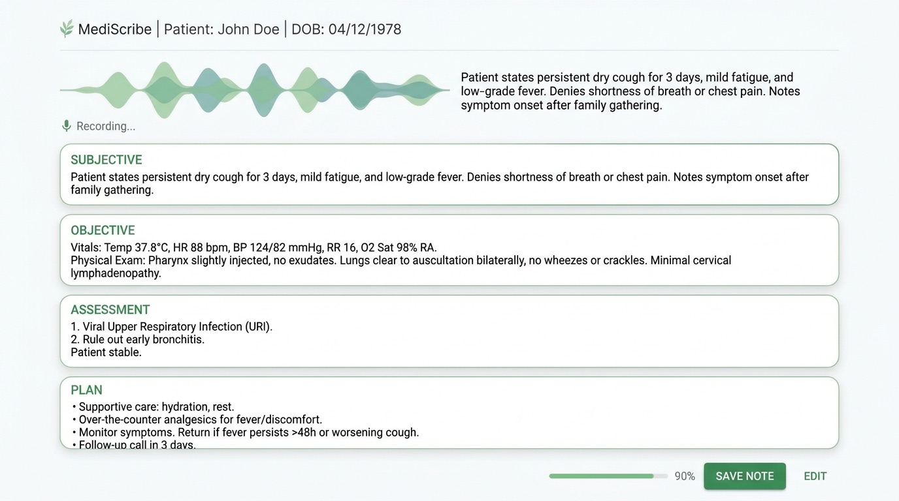

Clinical NER
Extract patient, clinician, and facility names from raw clinical text using a named-entity model.
Run Demo arrow_forward
Image Classification
Classify any photo in-browser — upload, preprocess, inference, ranked output.
Run Demo arrow_forwardDisease Detection
Recognize disease and condition mentions in clinical notes with a biomedical NER model.
Run Demo arrow_forward
Speech to SOAP Note
Record a visit and get a structured note — transcription, then drafting, all on-device.
Run Demo arrow_forwardInvoice Processing
Photograph a receipt and extract vendor, date, and totals via OCR and a small instruct model.
Run Demo arrow_forwardRetrieval-Augmented Q&A
Upload a document and ask it questions — retrieve, then generate, entirely on-device.
Run Demo arrow_forwardControlled Chunk Overlap
The same retrieval pattern, with chunk overlap you control so split facts aren't missed.
Run Demo arrow_forwardRAG with Reranking
Cast a wider net, then re-score candidates with a cross-encoder for a stronger final answer.
Run Demo arrow_forwardClaims Normalization
Vote across claim lines and classify fields valid/invalid/null — real logic from an open-source healthcare-data project.
Run Demo arrow_forwardPatient Record Matching
Probabilistic record linkage with real trained weights — the same math behind patient-matching engines.
Run Demo arrow_forwardRisk Score Calculator
Real CMS-HCC demographic and hierarchy logic, with your own coefficients — no invented numbers.
Run Demo arrow_forwardEncounter Grouping
Group claims from a flat file and a FHIR feed into one real-world encounter using real chaining rules.
Run Demo arrow_forward